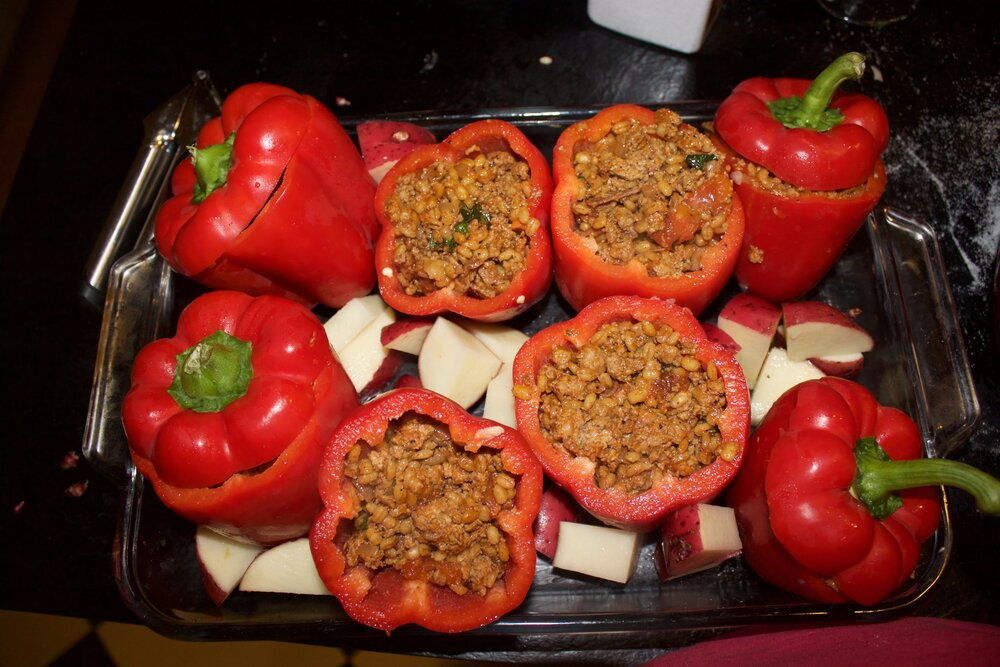

Turli Tava

Ka e sezona za chushki, 5 od 5 preporachlivo
Edno od omilenite jadeninja na creatotor, no joke.
Sostojki
- 1-2 glavici koromid
- 1 morkov
- Okolu 300g meleno meso
- 6 raci oriz ako e golema bagra mora povishe
- Lovorov list
Kako da go zgotvish
- Prvo se seckat kromidot i morkovot i se przhat.
- Od ka che poomeknat se stava melenoto meso
- Od ka che poomeknat se stava melenoto meso
- Pa se stava 2 mali lazhivko vageta, piper i sol ili po vkus
- Se plave orizot i se stava unatre so lovoroviot list, se przhe okolu minuta dve i se vade.
- Se pnat baburite i se pechat na 250 stepeni
- Od ka che ispechat baburite od gore se prevratuat
- Od ka che bie gotovo mozhe brashno da se zaprzhe, i od ka che se zaprzhe se stava piper
- Seto zaedno se stava u vodata u tavichkata dodeka che peche i za 5 min se vade.
Return to top
Return to main page